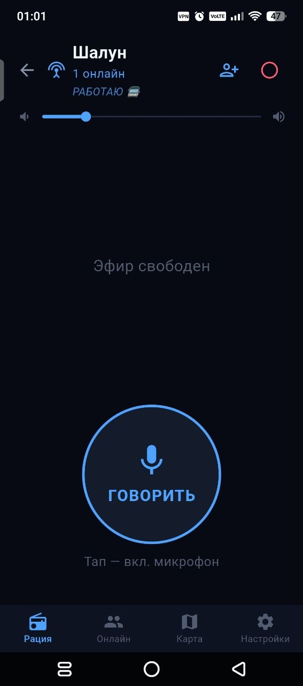
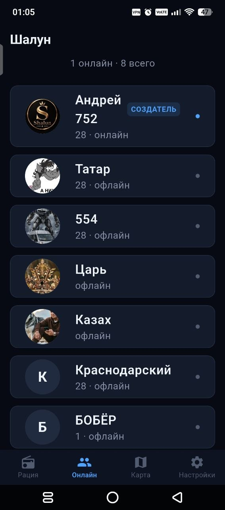
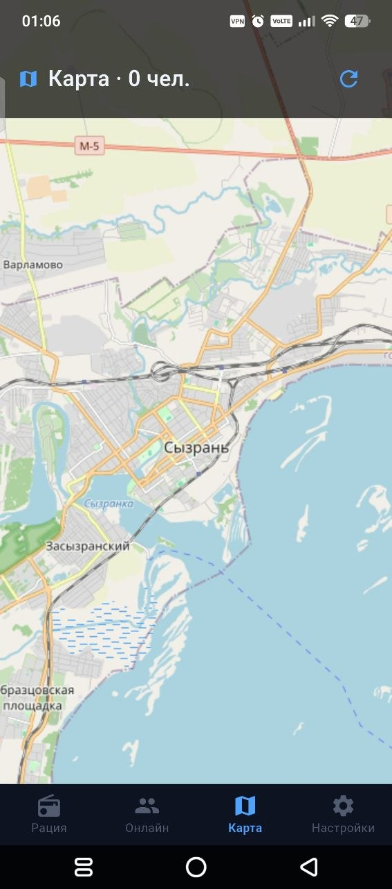
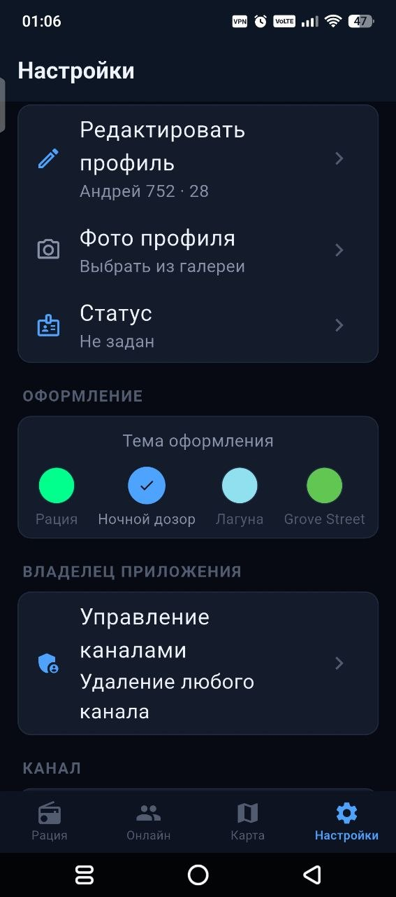

Передача одной кнопкой
Удержание или режим-тумблер: одно нажатие включает микрофон, второе выключает. Удобно за рулём, когда некогда держать палец на экране.
Рация для Android
Shalun 2 работает как рация, а не как мессенджер. Нажали — говорите, отпустили — слушаете. Все, кто в канале, слышат вас сразу, без звонков и набора сообщений.
Android 7.0 и новее · 33,5 МБ · Бесплатно

Одна кнопка
Удержание или режим-тумблер
Три роли
Создатель, администратор, участник
Карта
Кто где, если включил показ
SOS
Тревога админам канала
Как это работает
Регистрации по номеру телефона нет. Нужен позывной — имя, по которому вас слышат в канале.
Скачайте APK и откройте его. Android спросит разрешение на установку — это обычная установка не из магазина.
Имя и маршрут, например «Андрей 752, №28». Затем войдите в канал по коду-приглашению или найдите открытый в поиске.
Кнопка «Говорить» на главном экране. Держите — передаёте, отпустили — снова слушаете канал.
Возможности
Только то, что работает сейчас. Не список планов на будущее.
Удержание или режим-тумблер: одно нажатие включает микрофон, второе выключает. Удобно за рулём, когда некогда держать палец на экране.
Давит фоновый шум микрофона: двигатель, ветер, цех. Полной тишины не обещаем — это подавление, а не студия.
Пять вариантов звука или полное отключение. У каждого участника свой — как на настоящей рации.
Крупный позывной говорящего на весь экран — видно из держателя. Пока говорит другой, экран притухает и не слепит ночью.
Последние 200 передач: позывной, время, длительность. Видно, кто выходил в эфир и когда.
«На связи», «в пути», «сплю», «занят», «выходной» или свой текст до 20 символов. Статус видят все в канале.
Открытые и приватные каналы, поиск, избранное. Вход по коду-приглашению или QR, свой фон канала.
Заявка на вход с причиной отказа, отключение микрофона и звука, удаление из канала и бан.
Экраны
Настоящие снимки приложения. Ничего не дорисовано и не переставлено для красоты.
Рация
Эфир, кнопка передачи и кто сейчас на связи.

Участники
Позывные, статусы, метка создателя, кто в сети.

Карта
Кто где — если участник включил показ местоположения.

Настройки
Профиль, темы, звук, эфир, геолокация, обновления.
Управление каналом
Канал ведёт создатель. Он назначает администраторов, а те поддерживают порядок: принимают своих, отключают лишних.
| Действие | Создатель | Админ | Участник |
|---|---|---|---|
| Принять заявку | да | да | — |
| Отклонить с причиной | да | да | — |
| Отключить микрофон | да | да | — |
| Удалить из канала | да | да | — |
| Забанить | да | да | — |
| Назначить админа | только создатель | — | — |
| Удалить канал | только создатель | — | — |
Роли, которым действие недоступно, в строке не показаны.
Карта и SOS
Карта показывает участников канала, которые сами включили показ местоположения. Отметка обновляется, пока приложение открыто; выключили — отметка убирается с карты.
Кнопка SOS отправляет тревогу создателю и администраторам канала: позывной, канал и координаты, если телефон их отдал. Тревога приходит плашкой и видна на любом экране приложения.
Установка
Приложение ставится напрямую, без магазина. Обновления приходят изнутри: «Настройки → Проверить обновления».
Установка поверх предыдущей версии сохраняет данные и каналы.
Ограничения
Чтобы не было сюрпризов в неподходящий момент — сразу и прямо.
Не работает без интернета. Офлайн-режима нет: нужен доступ к серверу рации.
Не заменяет экстренные службы. SOS — внутреннее уведомление админам канала, а не вызов помощи.
Нет версии для iOS. Только Android 7 и новее, архитектура arm64.
Не записывает разговоры. В истории остаётся только факт передачи: позывной, время, длительность.
Сквозного шифрования нет. Такой функции в приложении нет, и заявлять её мы не будем.
Качество зависит от сети. Связь ограничена интернетом, телефоном и шумом вокруг.
Поставьте приложение, создайте канал и пригласите своих. Дальше — только кнопка «Говорить».